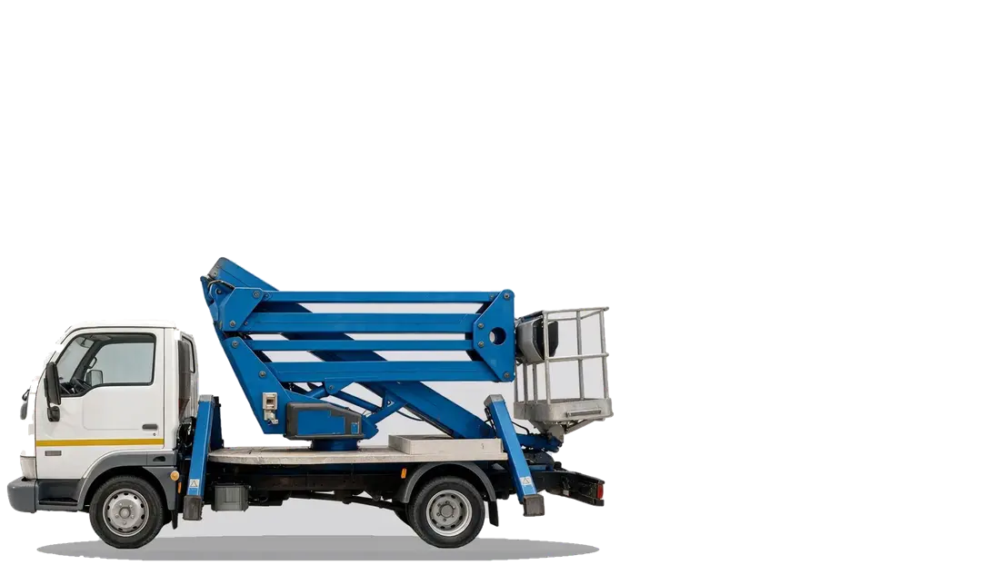
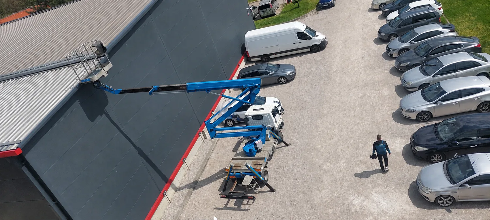
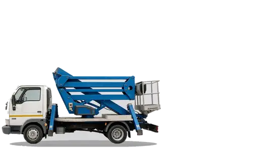

Kamion sa korpom do 20 metara
Radovi na visini u Obrenovcu, Beogradu i okolini. Operater je uključen u cenu, a po potrebi šaljemo i električare koji posao završe do kraja.
- Radna visina 20 m
- Bočni dohvat 9,5 m
- Nosivost 230 kg
- Operater uključen

Cene bez iznenađenja
Plaćate rad i dolazak, ništa drugo. Operater i gorivo su uračunati u cenu sata.
Kraći radovi
40 € po satu
Za intervencije do pet sati.
- Obračun po započetom satu
- Operater uključen
- Dolazak po zoni
Ceo dan
240 € od 6 do 10 sati
Fiksna cena za veće poslove.
- Ista cena za šest i za deset sati
- Operater uključen
- Povoljnije od naplate po satu
Preko deset sati
+20 € za svaki naredni sat
Kada posao traje duže od deset sati.
- Na 240 evra dodaje se 20 evra po satu
- Obračun po započetom satu
- Dogovor pre izlaska na teren
Dolazak: Obrenovac i 15 km oko njega bez naplate, Beograd 30 evra, Obrenovac i 20 km i više oko njega 30 evra, bez obzira na udaljenost. Sve cene su sa PDV-om.
Izračunajte cenu
Izaberite lokaciju i procenite koliko sati rada vam treba. Cena se računa odmah, bez čekanja na ponudu.
Korak 1 od 3
Korak 2 od 3
Obračun ide po započetom satu.
Korak 3 od 3
Vaša cena
Prva četiri sata i peti sat naplaćuju se po 40 evra.
Iznos je sa PDV-om.
Ne volite da zovete? Pošaljite izračunatu cenu u poruci, tekst je već pripremljen.
Sa terena
Fotografije su sa stvarnih izlazaka, mašina je zglobna platforma CTE Z 20E na kamionu.
Oprema, CTE Z 20E
Zglobna platforma na kamionu, pogodna za rad iznad prepreka i za prilaz mestima do kojih se ne može pravom strelom.
Korpa
- Radna visina20 m
- Bočni dohvat9,5 m
- Nosivost korpe230 kg
- Dimenzije korpe1,4 × 1,1 m
Vozilo
- Dužina6,75 m
- Širina2,20 m
- Visina2,75 m
- ModelCTE Z 20E
Da li vozilo prolazi kroz vaš prilaz
Prolazi bez problema.
Sa strane treba još mesta za stabilizatore. Ako je prolaz na granici, pošaljite fotografiju pa proveravamo pre izlaska.
Koliko je to 20 metara
Najčešće pitanje pre izlaska na teren jeste da li je korpa dovoljno visoka i može li da dohvati mesto sa strane. Evo odgovora na oba.
Radna visina
Sprat je u proseku oko tri metra, pa 20 metara radne visine dohvata otprilike šesti do sedmi sprat. Radna visina znači dokle dopire čovek iz korpe, a ne dužina same strele.
Bočni dohvat

9,5 m u stranuKorpa se izbacuje do 9,5 metara u stranu, pa se prilazi i preko ograde, žive ograde ili parkiranih vozila. Koliki je dohvat u konkretnom slučaju zavisi od visine na kojoj se radi, pa to proveravamo telefonom pre izlaska.
Za koje poslove se koristi
Otvorite kategoriju i videćete koliko takav posao obično traje i koliko okvirno košta. Tačan iznos dobijate u kalkulatoru ili telefonom.

Elektro radoviPostavljanje i popravka rasvete, vodovi, gromobranske instalacije i priključci na visini.
Najčešći posao za ovu mašinu. Zamena reflektora na halama i dvorištima, popravka svetiljki na stubovima, provlačenje kablova preko fasade. Kada treba i majstor, izlazimo sa električarima iz VM Elektra.
- Obično traje
- 2 do 4 sata
- Orijentaciono
- od 80 €
Fasade i krovoviPranje i farbanje fasada, popravke oluka, limarski i krovopokrivački radovi.
Za ovakve poslove se najčešće uzima ceo dan, jer se radi u pojasevima po fasadi. Korpa se pomera duž objekta, pa nema potrebe za skelom ni za dozvolom za zauzeće.
- Obično traje
- 4 do 8 sati
- Orijentaciono
- 240 € za ceo dan
Sečenje granaOrezivanje i uklanjanje visokih grana iznad kuća, dvorišta i saobraćajnica.
Radi se odozgo nadole, granu po granu, tako da ništa ne pada na krov ni na vod. Za grane iznad ulice termin dogovaramo tako da smetnja saobraćaju bude što kraća.
- Obično traje
- 2 do 5 sati
- Orijentaciono
- od 80 €
Reklame i tableMontaža i demontaža svetlećih reklama, bilborda i firmi na objektima.
Bočni dohvat od 9,5 metara je ovde presudan, jer se retko može stati tačno ispod reklame. Prilazi se i preko trotoara, parkiranih vozila i zelenila.
- Obično traje
- 2 do 4 sata
- Orijentaciono
- od 80 €
Montaža i servisKlima uređaji, antene, kamere i oprema koja se postavlja na višim spratovima.
Kratke intervencije na spoljnim jedinicama, kamerama i antenama. Naplaćuje se po započetom satu, pa se za sitan posao ne plaća ceo dan.
- Obično traje
- 1 do 3 sata
- Orijentaciono
- od 40 €
DekoracijaNovogodišnja rasveta, ukrasi i baneri na fasadama i u ulicama.
Sezonski posao, obično se radi u jednom danu za više objekata odjednom. Vredi rezervisati termin ranije, jer se u novembru i decembru popunjava.
- Obično traje
- ceo dan
- Orijentaciono
- 240 €
Navedena trajanja i iznosi su orijentacioni, za procenu pre poziva. Konačna cena zavisi od obima posla i lokacije.
Uz korpu i električari
Korpu iznajmljuje VM Elektro, firma koja se bavi elektro radovima. To znači da ne morate posebno da tražite majstore.
Ako vam treba da se rasveta zameni, kabl provuče ili instalacija popravi na visini, izlazimo sa korpom i sa električarima, pa posao bude završen istog dana.
- Zamena i montaža rasvete•
- Vodovi i priključci na visini•
- Gromobranske instalacije•
- Popravke kvarova na stubovima•
Česta pitanja
Da li je operater uključen u cenu
Jeste. Cena sata rada podrazumeva mašinu sa operaterom, ne iznajmljujemo korpu bez rukovaoca.
Kako se računa vreme
Po započetom satu, od dolaska na lokaciju. Do pet sati se naplaćuje po satu, a od šestog do desetog sata cena je fiksnih 240 evra.
Izlazite li van Beograda i Obrenovca
Izlazimo. I za lokacije dalje od 20 kilometara od Obrenovca dolazak je 30 evra, isto kao za Beograd.
Koliko je potrebno mesta za postavljanje kamiona
Vozilo je dugačko 6,75 m i široko 2,20 m, a za stabilizatore treba nešto prostora sa strane. Ako niste sigurni, pošaljite fotografiju prilaza pa procenjujemo unapred.
Da li su cene sa PDV-om
Jesu. Svi iznosi na sajtu, i u cenovniku i u kalkulatoru, već sadrže PDV. Nema naknadnog obračuna.
Šta ako je prolaz do objekta uzak
Vozilo je široko 2,20 m, a sa retrovizorima oko 2,50 m. Ispod 2,30 m ne prolazi, između 2,30 i 2,60 m prolazi uz vođenje i sklopljene retrovizore. Na sajtu postoji klizač kojim sami proverite svoju širinu.
Mogu li da pošaljem fotografiju pre izlaska
Možete i preporučujemo. Pošaljite snimak prilaza i mesta rada na Viber ili WhatsApp na 064 805 4523, pa procenjujemo unapred da li mašina može da priđe i koliko posao otprilike traje.
Da li radite hitne intervencije
Pozovite i proverićemo da li je korpa slobodna. Termini se dogovaraju telefonom.
Pozovite
Recite gde je posao, na kojoj visini i koliko otprilike traje. Odmah dobijate cenu i termin.
- Telefon 064 805 4523
- E-pošta info@najamkorpe.rs
- Zona rada Obrenovac, Beograd i okolina
- Instagram vmelektro95